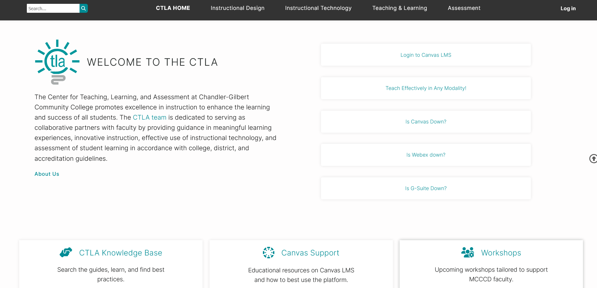

CTLA Website

Description
I worked to reinvent the CTLA website using WordPress. I designed and implemented several custom features using PHP, TypeScript, SQL, HTML, and CSS. For example, I created a search feature that leverages all languages mentioned to quickly search through existing pages, posts, and workshops, with fine-tuning filters available in an "advanced search" dropdown.